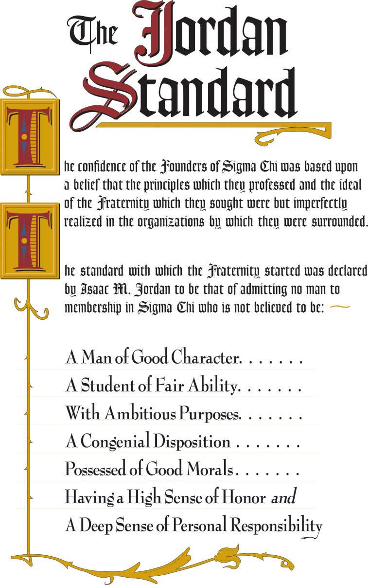

The Kappa Mu Chapter of Sigma Chi was founded on April 9th, 1994. At the time it is the 228th chapter and
ninth
in Canada.
Located at the University of Windsor, in Windsor, Ontario, the Kappa Mu Chapter is the preeminent collegiate
leadership development organization on its campus.
The chapter is active in both terms of the year. It holds numerous philanthropic, fundraising and social
events
in and around the Windsor area.
The chapter currently has 13 active members and 299 alumni.
To read more about the chapter's news and find out about recent events visit the Kappa Mu Facebook page
and
Instagram.
The fundamental purpose of our fraternity is the cultivation, achievement, and maintenance of the ideals of friendship, justice and learning.
A requirement for each of our brothers is to maintain a 70 percent or higher cumulative grade average. The
Scholarship Chair is responsible for monitoring the grades of each brother on a bi-annual basis.
The Leddy Library at the University of Windsor is a common area for brothers to study together, but brothers
will also arrange group study sessions at our chapter house or reserve classrooms in Dillon Hall or the
Odette Building.
Each brother of Sigma Chi is required to reflect the fraternity's values in their daily lives. As such, brothers are encouraged to follow the Jordan Standard - a set of ideals which produce prosperous gentlemen when followed. In fact, new members, or 'rushes', are considered for pledgeship (the next process for joining the fraternity) based on how they meet the Jordan Standard.
Each fraternity and sorority chooses a designated charity to which they primarily donate. The Kappa Mu chapter designated the Huntsman Cancer Institute as its primary charitable organization. Apart from numerous events throughout the year, the Kappa Mu chapter hosts two annual philanthropic events: Derby Days and Hot Tub-A-Thon.